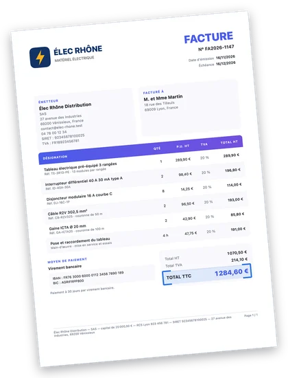
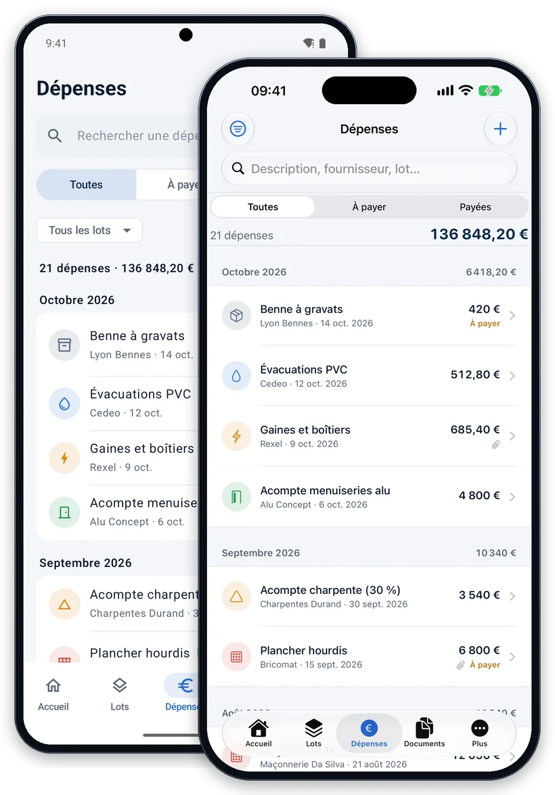

Costruzione e ristrutturazione
Tieni sotto controllo il budget del tuo cantiere
Costruisci da te, ristrutturi o ti fai costruire casa? Spese, fatture, preventivi, acquisti e scadenze: segui il tuo cantiere a colpo d’occhio, in autonomia o in coppia, dalla prima fattura alla fine dei lavori.
- Senza registrazione
- Dati protetti
- iPhone, iPad e Android
- Versione gratuita disponibile

Novità: per gli autocostruttori
Pensata per chi costruisce da sé
Compri i materiali, fai una parte dei lavori e affidi il resto ad artigiani? Sei funzioni seguono il tuo cantiere così com’è davvero.
Materiali o manodopera
Ogni spesa è classificata come materiali, manodopera o altro. Vedi a colpo d’occhio quanto costano le tue forniture e quanto costano gli artigiani.
Chi esegue ogni voce
Tu, un artigiano o entrambi: indica chi esegue i lavori di ogni voce e ritrovalo a colpo d’occhio nell’elenco.
Note di credito, resi e rimborsi
Hai riportato un articolo in negozio? Registra la nota di credito: il suo importo viene detratto dallo speso, dalla voce e dal fornitore. La lettura delle fatture riconosce le note di credito.
Spese per fornitore
Quanto hai speso in ogni negozio e con ogni artigiano, e in quanti acquisti: utile per negoziare uno sconto o scegliere dove comprare.
I tuoi risparmi reali
Per una voce che esegui tu, confronta le tue spese reali con il preventivo di un artigiano per gli stessi lavori. Risparmio provvisorio mentre la voce è in corso, effettivo quando la voce è completata. Senza preventivo, nessuna stima.
Lista acquisti e confronto prezzi
Da acquistare, ordinato, ricevuto: annota più prezzi per ogni articolo, con codice, link e spese di spedizione. Il più economico viene messo in evidenza e con un tocco diventa una spesa.
In Italia, nel 2023, 19.376 delle 55.309 nuove abitazioni sono nate per iniziativa di privati, cioè il 35%. (Istat, tavola 13.5 (Annuario statistico regionale Valle d'Aosta 2025))
Meglio di un foglio di calcolo: tutto sta in tasca, fatture comprese.
Tutto il tuo cantiere
Un’app, tutto il tuo budget
Pensata per i privati che costruiscono o ristrutturano: semplice tutti i giorni, completa quando serve.


Scansiona le fatture in pochi secondi
Fotografa o scansiona una fattura: importo, data e fornitore si compilano da soli. Tu controlli e salvi.
- Fatture, preventivi e foto nello stesso posto
- 5 letture gratuite, illimitate con Plus
- La lettura avviene sul tuo telefono

Anticipa gli sforamenti di budget
Il costo finale stimato somma quanto hai già speso, quanto resta da pagare sui preventivi accettati e i budget delle voci ancora da iniziare. Sai in anticipo se il budget reggerà e di quanto rischia di essere superato.

Confronta i preventivi con facilità
Differenze di prezzo, preventivo più economico, osservazioni di ogni artigiano: scegli con cognizione di causa e vedi subito l’effetto sul tuo budget.

Non perdere più nessuna scadenza
Una data di scadenza su ogni fattura da pagare e i prossimi pagamenti nella Home.
- Con Plus: acconti, stati di avanzamento e saldi di ogni preventivo
- Calendario dei pagamenti e promemoria

Organizza il budget per voce
Strutture e murature, struttura del tetto, impianto elettrico, impianto idraulico… Ogni voce ha il suo budget e gli sforamenti saltano all’occhio. Un assistente ti aiuta a ripartire il budget.

Tutti i giustificativi nello stesso posto
Fatture, preventivi e foto, collegati alle spese e alle voci. Con Plus: report PDF del cantiere, esportazione Excel ed esportazione di tutte le fatture, pronti per la banca, il commercialista o una richiesta di rimborso.

Condividi in coppia
Gestisci il cantiere in due
Invita il tuo partner con un semplice codice QR. Ognuno inserisce i dati dal proprio telefono, tutto si sincronizza automaticamente, su iPhone come su Android.
- Senza account né e-mail
- Crittografia end-to-end: nessun altro, nemmeno noi, può leggere il tuo cantiere
- Incluso in Plus; il tuo partner si unisce gratis
I tuoi dati
I tuoi dati restano tuoi
Senza registrazione
Nessun account da creare, nessun indirizzo e-mail richiesto.
Sul tuo telefono
I tuoi cantieri restano sul tuo dispositivo e nel tuo backup iCloud o Google.
Crittografia in coppia
La condivisione in coppia è crittografata end-to-end; il server non può leggere nulla.
Senza pubblicità
Nessuna pubblicità, nessun profilo, nessuna rivendita. Statistiche anonime solo se le accetti.
Anche su iPad
Uno schermo grande per vedere tutto il budget in un colpo solo: Home su due colonne, elenchi comodi, in verticale come in orizzontale.

Prezzi
Inizia gratis
La versione gratuita segue un cantiere senza limiti di tempo. Passa a Plus quando ti serve.
Versione gratuita
Gratis
Per seguire un cantiere, senza limiti di tempo.
- Un cantiere, con le sue voci e il suo budget
- Spese, fatture, preventivi e foto
- Materiali, manodopera, note di credito e resi
- Chi esegue ogni voce
- Avvisi di budget e rilevamento dei doppioni
- 5 letture automatiche di fatture
- Unirsi al cantiere del proprio partner
- Backup completo
ContoCantiere Plus
Annuale o a vita
Abbonamento annuale o acquisto unico a vita. Prezzi indicati nell’App Store e su Google Play. Abbonamento disdicibile in qualsiasi momento.
- Cantieri illimitati
- Lettura automatica illimitata delle fatture
- Costo finale stimato e confronto dei preventivi
- Lista acquisti e confronto prezzi
- Risparmi ottenuti facendo da te
- Analisi dettagliata e spese per fornitore
- Piani dei pagamenti, calendario e promemoria
- Condivisione del cantiere in coppia
- Artigiani, assicurazioni e garanzie
- Report PDF, esportazione Excel ed esportazione delle fatture
Domande frequenti
Dove vengono salvati i miei dati?
Sul tuo telefono e nel tuo backup iCloud (iPhone, iPad) o Google (Android). Non serve nessun account.
Il mio partner ha un Android e io un iPhone: funziona?
Sì. La condivisione in coppia funziona tra iPhone e Android. Il tuo partner scansiona il codice QR d’invito con la fotocamera; se non ha l’app, viene guidato verso l’App Store o Google Play, poi il cantiere viene aggiunto.
Faccio una parte dei lavori da me: l’app fa al caso mio?
Sì. Indica chi esegue ogni voce, separa materiali e manodopera, registra i resi in negozio e, con Plus, confronta i tuoi prezzi d’acquisto e i tuoi risparmi con i preventivi degli artigiani.
La lettura delle fatture invia le mie fatture da qualche parte?
No. La lettura automatica avviene sul tuo telefono. Nessuna fattura viene inviata a un servizio esterno per essere letta.
Come disdico l’abbonamento?
iPhone: Impostazioni › il tuo nome › Abbonamenti. Android: Google Play › Pagamenti e abbonamenti › Abbonamenti. L’acquisto a vita, invece, non ha niente da disdire.
Il tuo cantiere merita un budget sotto controllo
Gratis, senza registrazione, su iPhone, iPad e Android.